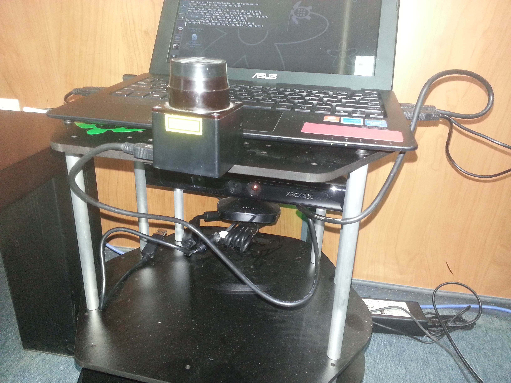

Adding Hokuyo Laser Range Finder to Turtlebot¶
This tutorial presents the steps for adding the Hokuyo laser range finder (LRF) sensor to TurtleBot, and explains how to write URDF description of the Hokuyo LRF, and how to modify the URDF of the Turtlebot robot to account for the addition of the Hokuyo sensor. Before going through this tutorial, it is highly recommended to have a background on URDF, and for this you may need to look at URDF Tutorials. It is also recommended to understand the URDF Gazebo extensions.
Note
In this tutorial you will learn how to:
- Download the Hokuyo Related Packages
- Develop a Hokuyo URDF file
- Integrate Hokuyo with Turtlebot robot
- Using SLAM With Hokuyo LIDAR Sensor
This tutorial was developed for ROS Hydro version. However, it is expected to also work with Groovy (not tested).
The figure below shows the Hokuyo LRF added on top of the Turtlebot. It is possible to add it in other locations, provided that the laser beam do not interfere with the body of the robot.
Copying Hokuyo description in meshes folder¶
After the installation of above package is completed, we should now make the changes in Turtlebot URDF. First we should add the hokuyo.dae file into /opt/ros/hydro/share/turtlebot_description/meshes folder. Meshes file contain all the properties that are needed to define hokuyo_node
Note
You need administrative and write privileges to do it
Editing and adding the Hokuyo URDF file¶
Now go the folder /opt/ros/hydro/share/turtlebot_description/urdf/sensors and create a new file called as hokuyo.urdf.xacro. And add the following lines in the file:
<?xml version="1.0"?>
<robot name="sensor_hokuyo" xmlns:xacro="http://ros.org/wiki/xacro">
<xacro:include filename="$(find turtlebot_description)/urdf/turtlebot_gazebo.urdf.xacro"/>
<xacro:include filename="$(find turtlebot_description)/urdf/turtlebot_properties.urdf.xacro"/>
<xacro:macro name="sensor_hokuyo" params="parent">
<link name="laser_joint">
<collision>
<origin xyz="0 0 0" rpy="0 0 0"/>
<geometry>
<box size="0.1 0.1 0.1"/>
</geometry>
</collision>
<visual>
<origin xyz="0 0 0" rpy="0 0 0"/>
<geometry>
<mesh filename="package://turtlebot_description/meshes/sensors/hokuyo.dae"/>
</geometry>
</visual>
<inertial>
<mass value="1e-5" />
<origin xyz="0 0 0" rpy="0 0 0"/>
<inertia ixx="1e-6" ixy="0" ixz="0" iyy="1e-6" iyz="0" izz="1e-6" />
</inertial>
</link>
<joint name="hokuyo_joint" type="fixed">
<axis xyz="0 0 1" />
<origin xyz="0 0.22 0.05" rpy="0 0 1.570796"/>
<parent link="${parent}"/>
<child link="laser"/>
</joint>
</xacro:macro>
</robot>
Code Explanation¶
The code focuses on two things one is description about Hokuyo that is in meshes folder, and other is the defining join with its location and its relation with parent frame (joint). For finding the location of hokuyo sensor, you may need to calculate the location that will be in meters and the representation is in x,y,z . Turtlebot assumes 0 0 0 at it base center.
<collision>
<origin xyz="0 0 0" rpy="0 0 0"/>
<geometry>
<box size="0.1 0.1 0.1"/>
</geometry>
</collision>
Collision do provide the opportunity to take a decision before going to collide.In above code we have defined collisions for more explanation look into Adding Collisions.It is necessary to set the parameters to avoid collisions.
<joint name="hokuyo_joint" type="fixed">
<axis xyz="0 0 1" />
<origin xyz="0 0.22 0.05" rpy="0 0 1.570796"/>
<parent link="${parent}"/>
<child link="laser"/>
</joint>
In above code, first thing we did is specifying the joint name that is Hokuyo (but can be changed to any other thing), the type we select as fixed then we defined where the Hokuyo is attached with respect to origin, Next thing the joints are defined by parent and child, You can also specify some fixed frame like map or base_footprint or make it link to default parent
Adding Hokuyo URDF description to Turtlebot URDF description¶
In order to be Hokuyo a part of URDF description, we need to add Hokuyo LRF description to the Turtlebot URDF so that it can be visualized in rivz and other simulators. For that purpose, go to the folder /opt/ros/hydro/share/turtlebot_description/urdf and add the following line in turtlebot_library.urdf.xacro file:
<xacro:include filename="$(find turtlebot_description)/urdf/sensors/hokuyo.urdf.xacro"/>
This will call the hokuyo description created in urdf. In order to launch the description , it is just required to launch mininal.launch and it will work, in order to see a hokuyo sensor in rviz we need to add its definition in gazebo that is not covered in this tutorial but can be borrowed from Building Visual Robot
Creating a Launch File for Hokuyo Node¶
Its is better to create a Hokuyo Launch file in order to launch the Hokuyo node. It will also allow Hokuyo node dynamic re-configuration of Hokuyo node. Create a launch file in any package and call it as hokuyo.launch. Copy and paste the following code in hokuyo.launch
<launch>
<node name="hokuyo" pkg="hokuyo_node" type="hokuyo_node" respawn="false" output="screen">
<param name="calibrate_time" type="bool" value="true"/>
<param name="port" type="string" value="/dev/ttyACM0"/>
<param name="intensity" type="bool" value="false"/>
<param name="min_ang" value="-2.356194437"/>
<param name="max_ang" value="2.35619443"/>
<param name="cluster" value="1"/>
</node>
</launch>
Using SLAM With Hokuyo LIDAR Sensor¶
In order to use Hokuyo for SLAM as described in tutorial Building SLAM hokuyo-turtlebot. Following are the steps to be done at turtlebot Launch the Turtlebot
roslaunch turtlebot_bringup minimal.launch
run the Hokuyo node:
roslaunch turtlebot_test_launch hokuyo.launch
Launch the gmapping for map building
roslaunch turtlebot_navigation gmapping_demo.launch
You can view the map at workstation using rviz
roslaunch turtlebot_rviz_launchers view_navigation.launch